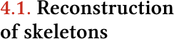
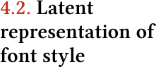
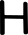

Results
The VAE and sketch decoder trained for 50 epochs with a learning rate of 0.001 and a batch size of
256.
As mentioned before, we use 2623 64 × 64px black and white images of skeletons for each capital
letter of
the Latin alphabet, so our dataset is constituted of 68 198 images.

As mentioned before, the model returns a sequence of points that, when connected, create a
reconstruction of
the skeleton image used as input. In most cases, the generated strokes reconstruct the basic
features of the skeleton.
For example, in the case of the letter “A”, the network first creates one stem, then the crossbar
connects both stems
and finally draws the second stem. Even though there is nothing to control the distance between
points or to enforce
them to be close, the network learns that it needs to connect both stems at the beginning and the
end of the sequence.
Another interesting feature observable in the reconstruction is related to how the ANN handles the
letter “T”. This letter
presents one of the simplest skeletons of the alphabet, so the network can learn how to generate the
whole structure of
the letter very quickly in comparison with others.
Figure 3 presents a comparison between the original inputs and the reconstructed skeletons using a
single stroke.
The reconstructions of “C”, “L” or “K”, for example, are very similar. The letters “A”, “X” and “K”
present a more complex
challenge to the network as it needs to create a path that overlaps itself to draw the whole letter
structure with only one
line. Sometimes, the serif is lost in the reconstruction due to the same issue. The line must
overlap itself multiple times
to create the small parts without messing with the overall structure of the letter. But the other
reason for this could be
that the number of letters with serif is lower than the number of letters without it. In summary,
even though the small
details of the letters might be lost, our network is able to create the minimal structure of the
letter, generating skeletons
that cannot be confused with any other letter.

To understand if the trained model can learn a latent representation for the different letters that
is smooth and interpretable, we need to visualise the 64-dimensional z vectors for the dataset. So
we
take all the images of the dataset (68198 images) and encode them using our network. Then, using the
means and standard deviations of each encoded image we took a sample from the distribution. Finally,
we took all the z vectors and reduced their dimensionality using the t-SNE algorithm [27]. This
allows
us to reduce the z vectors from a size of 64 to two dimensions which can be translated to positions
in
a two-dimensional domain. For each position of a two-dimensional grid, we place the image of the
best
candidate. We select this candidate by finding the two-dimensional encoding closest to that
position.
Figure 4 presents the visualisation of the results. In general, the model can separate the different
letters into clusters. In some cases, it is also possible to observe that similar letters are placed
near each other, for example in the case of the letters “B”, “R” and “P”. These three letters
present
similar anatomical characteristics, they share a top bowl and they all have a vertical stem, thus
they
are placed near each other. The same happens for the letters “T” and “I” which are placed more
separately from the rest but near each other.
Even though the majority of the skeletons for the letter “I” is represented with a single stem,
in some cases, when they have serif, they are similar to the letter “T” but with a cross stroke on
the top and bottom part of the letter. This leads to both letters having a strong similarity between
each other, therefore they are placed together in the latent space. We also create a similar
representation
contemplating the skeleton images of a single letter (2623 images). To understand if the trained
model was
able to smoothly change styles within the same letter we created a similar visualisation as in
Figure 4.
Figure 5 presents the visualisation of the results for the letter “R”. As it is possible to observe,
the
model is able to separate the different font weights across the latent space, creating different
regions.
The zoom-in boxes show four separate locations where we notice a concentration of specific font
styles.
In (A) it is presented a region where the condensed fonts are, while the opposite corner (D)
represents
the most extended fonts. It is also possible to observe that (B) represents the italic, and finally
(C)
presents most of the fonts with serifs. Local changes within these regions are also visible, where
the
font width increases when distancing from the region (A) and approximating to the region (D). It is
also possible to observe a slight increase in the font height in the top-bottom direction.

After analysing whether the latent space translates font characteristics for meaningful latent
representation,
we explore linear interpolations between pairs of skeletons for a given glyph. First, we encode two
randomly
selected fonts from the dataset into their corresponding z vectors. Then, we perform a linear
interpolation
between the two vectors and, using the trained sketch decoder, we reconstruct the skeletons for
these vectors.
Figure 6 shows some results of this exploration. The first and last glyph of each row are the
original skeletons,
and in the middle are the interpolations between them two. The interpolation percentage starts at 0%
and ends
at 100%, which means that the second skeleton is a reconstruction of the glyph on the left side, and
the
penultimate skeleton is a reconstruction of the glyph on the right



The results show that the model is not only able to decode meaningful skeletons but it is also able
to
control several characteristics of it. In the example of the letter “N”, not only the model can
control
the width of the letter, but it also controls its height.
As it is possible to observe in the interpolations presented in Figure 6, not only the model is able
to decode meaningful skeletons but it is able to control several characteristics of it. In the
example of the letter “H”, the width of the letter is slightly changed until it matches the width of
each skeleton input image. In the case of the letter “N”, not only the model is able to control the
width of the letter, but it also controls its height. At the same time the width of the letter
changes, its height is also modified to match its parents, which allows wider control over the
skeleton that can be created. In the case of the letter “T”, it is possible to observe that the
model can also control how much the letter is italic. As we go from the left input skeleton image to
the right, the stem of the letter gets closer to a vertical position. This not only shows that the
model is capable of perceiving different angles but it can also transition between them gradually.
Therefore, we might be able to control all these stylisations of the skeletons by navigating the
latent space. This can be observed in the visualisation shown in Figure 5. There are certain regions
dedicated to different letter styles. So, we can navigate this space in order to create fonts that
demonstrate a set of desired styles.
We also interpolate between skeletons of different letters. By observing the resulting skeletons
present in Figure 7, we observe that the model is able to pass from one skeleton to another from
different letters. Sometimes the morphings are not even expected to be smooth, because some letters
have anatomical parts completely different, like for instance the “Z” and “T”. The generated
skeleton starts as “Z” but over time it loses its bottom crossstroke. Moreover, its diagonal stroke
slightly changes its angle and transforms itself into the stem of a “T”. There are also other
transformations that are expected, such as the case of “P” and “F”, which share a stem. Over the
line, the generated skeleton opens its bowl to create the arms of the “F” and at the same time
slightly inclines the stem to create an italic glyph according to the inclination of the “F”.
Another information that we can obtain is that sometimes we start to visualise intermediate
skeletons that look like other existing letter’s skeletons. For example, when we explore the latent
space between “G” and “L” in some intermediary steps we can observe some resemblance with the letter
“C”.
So far, we have demonstrated how our system is able to reconstruct and create new skeletons through
the exploration of latent space. However, our goal is to develop a tool to support the design
process by allowing the creation of artificial variable fonts or morphing fonts, so it is imperative
to test the application of the generated skeletons.
As mentioned before, the skeleton extraction library [16] allows, in addition to extracting the
points, obtaining the stroke width at each point of the skeleton. When we created the dataset, by
extracting the skeletons of the uppercase letters of the Latin alphabet for each font file that we
selected, we saved the points of each skeleton and its stroke width to use posteriorly. With these
values, we were able to interpolate the stroke width along with the generated skeleton. The process
of filling the generated skeletons is the following. First, we randomly choose two skeletons to
interpolate. Then, we calculate the stroke width at each point of the generated skeletons. To do
this, we calculate the corresponding point on the skeletons that serve as input for the creation of
intermediate skeletons. We do this calculation by overlapping the input skeletons and the generated
skeleton and calculating the closest match. The stroke width at each point is a result of combining
the interpolation of the widths of the input skeletons.
Figure 8 shows some results in which each row represents a different interpolation. Looking at the
generated glyphs, we can see that they look similar to a regular font. With a few adjustments, we
could use them as a variable font. Now, with interpolated fill, the contrast between variations is
more visible, because we had another parameter to the glyph design. By splitting the skeleton and
the filler we have more visual possibilities because we are not stuck with a filler. In these tests,
we use filling in the original fonts to fill in the intermediate ones, but it is not mandatory. We
can even use some fonts to create the skeleton and others to create the filling or even use a fixed
value along the skeleton. By applying the filling, the interpolated glyphs become more unique, by
suffering more alterations when moving between the two input glyphs. For example, in the “S” (Figure
8) we can observe that besides the axis alteration, the glyphs also change in contrast. The
generated “S” near the left is styled more like a modern font, with high contrast and serifs. From
left to right the contrast inside the generated glyphs turns almost nil and they lost the serifs.
As mentioned before, our system provides a tool to facilitate the process of building these dynamic
identities with a typographic component. With this tool, designers can generate skeletons and
develop a filling to create their versions of glyphs. To demonstrate the application of our system
we made a series of experimentations with different ways of using the obtained skeletons by our
model (see Figure 9 and 10).
In the first application (Figure 9), we present the interpolation* between two input glyphs. The
input glyphs are represented in red and light blue while the generated one is in dark blue. To
visualise the three superimposed glyphs, we apply the multiply effect, thus obtaining another colour
that represents the common parts between the generated and the original ones. The generated glyphs
are very diverse on a visual level, enabling the design of a dynamic visual identity with the use of
only two fonts. We believe that the mutating factor of these results provides an identity that is
easily placed side by side with the dynamic visual identities and variable fonts that are made these
days. In the second application (Figure 10), the generated glyphs use just the interpolated
skeletons. The stroke width is also calculated based on the input glyphs. However, the filling is
further away from the traditional typographic visual aspect. Along the skeleton line, we draw a
series of crosswise line segments to define the width of the glyph’ stroke. The density changes to
accommodate the same number of line segments between each pair of points.